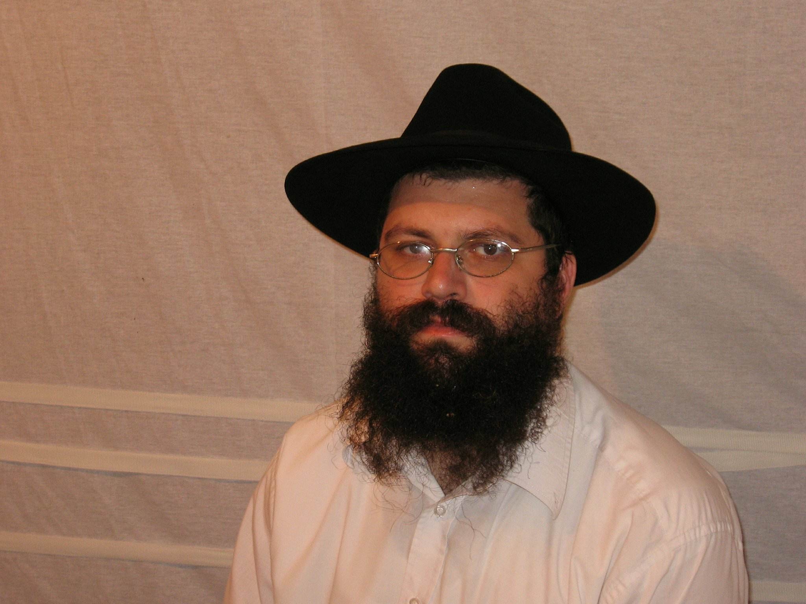

A Hasid Who Accepted Messiah Yeshua, on the Film "A New Spirit"
A Lubavitch Hasid accepted Yeshua as his Messiah and believed in Him with all his heart. He talks about what he went through and about the new Israeli film on Messianic Jews, "A New Spirit".
The video uses music and improvisations by musicians of the Cornerstone congregation in Kazan.
The Hasid I interviewed saw this video before it was published. It seemed to me that he did not fully understand all the possible consequences of speaking out, since at least some of his former companions in the Orthodox world here in Israel would certainly see it. After the video was published I asked myself: might its frankness harm the man I talked with?
I could not hold back. I got in touch with him and questioned him closely (I very much did not want to put him at risk): had he weighed all the possible consequences of this interview? Did he perhaps want to remove it?
In answer I heard his calm voice on the phone: "My friends, to whom I have already sent links to this video, asked me the same questions. But when I agreed to this interview I already understood what I was doing and had weighed everything. And besides, one has to start sometime! I want people to see this testimony."
Ephraim Kalish

The Hasid Who Found the Messiah
Editorial help with the text: Alla Varentsova
Israel is a secular state, but it is impossible to imagine it without the Torah, without prayer and without the search for the Most High. One Jew once summed up the essence of the law God gave to the Jewish people like this: "…thou shalt love the Lord thy God with all thy heart, and with all thy soul, and with all thy mind, and with all thy strength: this is the first commandment. And the second is like, namely this, Thou shalt love thy neighbour as thyself. There is none other commandment greater than these" (Mark 12:30–31). That Jew's name was Yeshua, in Greek Jesus. And in the opinion of many he was the very Messiah whom the Jews of Israel and the diaspora are still waiting for. Although pilgrimage tours to the biblical sites of Israel are today the most popular among believers of different denominations, that cannot change history: for more than two thousand years the church and the synagogue have rejected each other. Yet Yeshua first spoke his teaching about God as Father precisely in a synagogue. So it was not always like this. Yaakov Damkani is an Israeli, a Sephardi Jew, our contemporary, who found in the Jewish sacred texts the answer to the age-old question: when will the Messiah come? His book "Why Me?" has been translated into several languages. And the film "Ruach Hadasha" ("A New Spirit"), made by the Israeli director Doron Eran in 2017, has stirred debate and mixed emotions among Israelis and among Jews and Christians in various countries. That is why we decided to talk about the film with someone who knows Orthodox religious Israeli society well and understands well what the hero of the film went through. Our guest is Mikhail Loshak, a Hasid who found the Messiah.
Ephraim Kalish: In January 2018 the film "A New Spirit", about the life and spiritual search of Yaakov Damkani, had its premiere in Israeli cinemas. It is the first feature-length film about a Messianic Jew in the history of Israel and, I would even say, in the history of mankind. Mikhail, what was your impression?
Mikhail Loshak: Of course, it sets a precedent. For the first time since the apostles the Gospel is being spread on such a scale in the land of Israel. I cannot remember a Messianic Jew ever being given the chance to speak to such a large audience. I hold that nothing happens by chance. And if the premiere took place, then God gave this event a green light. I liked the film. It tells quite boldly about Damkani's path, what he went through, what conclusions he came to and what he calls the viewer to. Though the inner world of the main character could have been shown more deeply. As a viewer it was important to me to understand how he came to believe and realised who the Messiah was for him; I wanted to see more deeply the upheaval that took place in his soul.
E.K.: I am especially interested in talking with you about this film, since you know religious Israeli society from the inside. When you watched some of the episodes in the film, you understood very well what they were about, better than many of us. How did you come to be among the Chabad Hasidim at all?
M.L.: I came to Israel in 1993, at the age of fifteen. Alone, without my family. I studied at a tichon dati (a religious secondary school) up to year twelve, then served in the Israeli army.
E.K.: When you came here, were you already religious?
M.L.: I got to know the Jewish tradition, the history of Israel and Hebrew while still at home in Georgia. In Batumi we had an association for Georgian-Jewish ties and a Jewish Sunday school, where I studied. We kept the Jewish feasts and learned Hebrew and the history of the State of Israel and of the Jewish people. So I had a general idea of Israel. When I arrived I knew something about the country. For example, when I walked around Jerusalem I knew where things were.
E.K.: Was your family religious?
M.L.: No, my family was secular and assimilated. But my grandfather always instilled in me a love for the Jewish people. It was he who brought me to an awareness of my Jewishness and of the fact that a Jew is inseparable from the Torah: a Jew always has time to open the Torah and study it.
E.K.: Did you study at a beit midrash (a religious school where the Jewish sacred writings are studied)?
M.L.: Naturally; I saw in it the meaning of my whole life. In the Jewish understanding everything that goes on around us, all the areas of life that demand a person's participation and dedication, work, school, are only a means, a way of existing in the physical world. The purpose of life is to study and keep the commandments of the Creator. I went to the beit midrash every day to pray with a minyan (ten men, the minimum required in Judaism for communal prayer) in the synagogue, and then I had daily lessons. There is a set cycle that includes studying the weekly Torah portion, Hasidut (the teaching of Hasidism) and the Talmud. All of it had to be learned.
E.K.: You went on studying Torah and working at the same time?
M.L.: The Torah is like air. I did not consider it an extra burden, although it is called "ol malchut shamayim", "the yoke of heaven". That is what people say. Without this, without studying the Torah, a Jew simply cannot live.
E.K.: There are Jews who manage to live without it :)
M.L.: In the course of my studies (besides the basics I also studied the inner Torah, which is called Kabbalah) I discovered that not everything was so smooth: in our yeshiva the Tanakh was practically not studied.
E.K.: You began to notice that the sacred book of the Jews, the Tanakh, made up of the books of the Torah, the Nevi'im (Prophets) and the Ketuvim (Writings), for some reason received no attention, while the Talmud was studied intensively.
M.L.: Yes, they study the Talmud and the halakhah, human law.
E.K.: Why did that trouble you, since it is accepted practice?
M.L.: Because there are big differences between what is written in Scripture and what goes on today. I see that all the goals a person should reach according to God's plan are not being realised. People cannot reach God's will. They do not even realise it. Everything they do for God they do mechanically and coldly.
E.K.: In the world you were in, first in the yeshiva and then in the beit midrash, did you experience God's touch? Did you receive answers to prayer?
M.L.: In Judaism there is a view that these things are so far from the ordinary person that only a handful of people are worthy of them. People like Avraham, Yitzhak, Yaakov. They were super-people, so God spoke with them. And we are not righteous enough to be worthy; we are very far from it. We are hardly able to reach such a level of relationship. That is, we are able, but for that we must work on ourselves very hard. Turn ourselves completely upside down, turn our whole being upside down. And then perhaps one of us will be granted such experiences.
In Judaism a different angle, a different view of the spiritual is more usual. On us, as God's people, the chosen people, lies a duty: to keep the Torah and the commandments all our life. On the one hand it is a duty: we must keep them. On the other hand it is not at all burdensome or dull, because the Jewish heritage, what is called the Oral Torah, is so vast that you are constantly receiving new information; there is no monotony.
E.K.: I have noticed that during the Jewish feasts, in synagogues, at the Western Wall, at festive events, you can hear very moving singing by Hasidim and see tears in their eyes. Can we take it that they are experiencing God, or are people working themselves up?
M.L.: Of course there are spiritual experiences. Not everything in Judaism is dry. There are very touching moments. There are things I miss here in the Messianic movement.
E.K.: Since you accepted Yeshua as your Messiah, have you experienced the touch of the Most High?
M.L.: Of course.
E.K.: You did not have that before? Have you found something new? Could one say that in some sense you have felt closer to God?
M.L.: I have felt that He is in me. Before, I did not feel it so strongly. There were no such sensations. And the TANAKH has come alive for me; today I read it differently: it has simply come to life for me.
E.K.: I want to come back to the film "A New Spirit". You noted that the life of the Haredi religious community (ultra-Orthodox Jews) was shown quite realistically, the community that caused the main character so much trouble and persecuted him. Did you yourself take part in such things?
M.L.: In Israel there is an organisation, Yad L'Achim ("A Helping Hand to the Brothers"), which fights missionaries. But there is nothing surprising in that. Yeshua spoke of it too: that they would persecute you and consider it a commandment when they beat and killed you: "They shall put you out of the synagogues: yea, the time cometh, that whosoever killeth you will think that he doeth God service" (John 16:2).
E.K.: You mean that when you were a Chabad Hasid you thought the same way? You too were trying to serve God?
M.L.: Yes. Faith in Yeshua is considered idolatry, and in the view of the Haredim it must be rooted out of the people. In Orthodox circles this is considered a commandment.
E.K.: Did you ever take part in attacks on members of the Messianic movement or of missionary organisations, as shown in the film "A New Spirit"?
M.L.: I took part in secret operations: I got into a Messianic congregation posing as a new believer in order to receive help. Then we watched their activities and tried to shut down all their projects. The aim of the Orthodox Jews is to hinder the activity of missionaries in Israel. When Jews turn to Yeshua, the Haredim consider it assimilation. One could also put it this way: for religious Jews it is a fight for the commandments.
E.K.: What led you to understand your responsibility before God?
M.L.: What led me to Judaism? Originally, the fact that as a child I had a Bible. It was in Russian, and of course it contained the New Testament. That was before I came to Israel.
E.K.: In other words, you had some initial idea of Holy Scripture. Then you immersed yourself in modern Judaism in Israel, but at a certain point you began to compare.
M.L.: Rather, I began to investigate what was what. I started digging on the Internet, watching various videos on the subject, then I began reading the Tanakh in depth and studying all the prophecies about the Messiah. In the end I met Messianic Jews.
E.K.: After you left the Haredi world, how did your relations with those people develop? You surely had friends there.
M.L.: Yes, I left the Orthodox world. But I still have friends there; we did not quarrel. Our views simply parted. When we meet, we say hello and greet each other, and there is no enmity between us.
E.K.: Did they not try to talk you out of it?
M.L.: Yes, they tell me: repent, do "teshuvah".
E.K.: That is, as faithful Jews they must bring you back?
M.L.: Yes, they are obliged to bring me back. But it is hard for them, because they do not read the Tanakh attentively. At one time the teaching of Kabbalah helped me a great deal. It is very close to what Yeshua taught. For example, love for the Creator and love for one's neighbour are one commandment. Or "Adam Kadmon", a Kabbalistic concept close to what is said in the Letter to the Colossians 1:15: "Who (the Messiah) is the image of the invisible God, the firstborn of every creature." There are very many parallels. I will not go into it now, but there is something to think about.
E.K.: When you meet your former friends, do you try to interest them in what has captured you? Or do they keep their distance and not talk about it?
M.L.: For now a veil lies on their minds, hiding the light of truth from them. However much you tell them, they are convinced of their own view. Something must happen for them to come to an understanding of the Messiah. Of course, there are great changes in religious circles. Many are searching inwardly and are not standing still. Great changes await them.
An interview with Yaakov Damkani, the author of the book on which the new Israeli film "A New Spirit" is based, can be watched here (video in Russian).